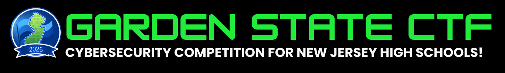
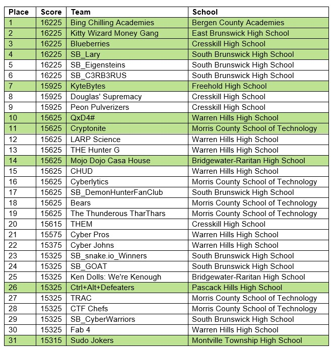

Overview
Garden State CTF was a statewide cybersecurity competition for New Jersey high school students (grades 9-12). I competed as a member of Ctrl+Alt+Defeaters, a four-person team focused on high-value challenge solving across multiple security domains.
The event was organized by NJCCIC, CYBER.ORG, and partners, with a two-round format: a week-long online qualifier followed by an in-person final for top teams at The College of New Jersey during the Garden State Cyber Summit.
My Team Results
- Team: Ctrl+Alt+Defeaters
- Total points: 15,925
- Individual contribution: approximately 7,000 points (largest contribution on the team)
- Team rank: 26th place overall
- School representation: Highest-scoring team from our school, placing 9th among schools
- Next stage: Qualified for finals at TCNJ on May 27, 2026
Event Participation
500+
Teams
60+
Schools
1300+
Students Participating
Images


Competition Scope
The online qualifier ran for approximately one week and required teams of up to four students to solve a broad set of scored challenges. The format rewarded both technical depth and prioritization, requiring teams to balance high-difficulty tasks with consistent point accumulation.
Challenge categories included digital forensics, cryptography, network security, and incident-response scenarios. My role centered on technical execution and scoring, with a focus on solving higher-value challenges under time constraints.
Top teams advanced to the in-person finals. Ctrl+Alt+Defeaters qualified and will compete at TCNJ on May 27, 2026.
Skills Applied
- Digital forensics workflows and artifact triage
- Cryptographic analysis and iterative decoding
- Threat hunting and multi-source correlation
- Incident-response decision-making under time pressure
- Team strategy and challenge prioritization
- Technical communication during active problem solving
Outcome
This competition provided high-pressure, hands-on cybersecurity experience and strengthened my ability to analyze unfamiliar problems quickly, prioritize effectively, and deliver results in a team environment. It also reinforced my long-term focus on cybersecurity and competitive problem solving.